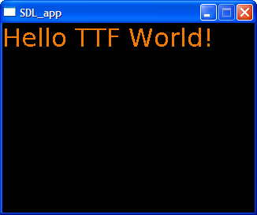

Abstract
LISPBUILDER-SDL-TTF provides a Lisp wrapper for the SDL_TTF library, and provides support for loading and rendering True-Type fonts in an SDL application. The SDL_TTF wrapper is in itself a wrapper around the FreeType 1.2 library, available at: Freetype Homepage. LISPBUILDER-SDL-TTF has a dependency on the LISPBUILDER-SDL package. LISPBUILDER-SDL-TTF is distributed under the MIT-style license.
Current Version: The current version of LISPBUILDER-SDL-TTF is version 0.2.
The TrueType library is automatically initialized and uninitialized by the LISPBUILDER-SDL package. The functions INIT-TTF and QUIT-TTF are added to the lists SDL:*EXTERNAL-INIT-ON-STARTUP* and SDL:*EXTERNAL-QUIT-ON-EXIT*. LISPBUILDER-SDL iterates over these lists in calls to SDL:INIT-SDL, SDL:QUIT-SDL and SDL:WITH-INIT in order to initialize or uninitialize any external libraries such as LISPBUILDER-SDL-TTF.
To open a TrueType font use INITIALISE-FONT or the macro WITH-OPEN-FONT. LISPBUILDER-SDL-TTF allows more than one FONT to be used simultaneously within a single SDL application.
LISPBUILDER-SDL-TTF has the concept of a *DEFAULT-FONT*. A FONT may be bound to *DEFAULT-FONT* by using INITIALISE-DEFAULT-FONT, WITH-OPEN-FONT, or WITH-DEFAULT-FONT. All functions that take a &KEYword or &OPTIONAL FONT argument accept *DEFAULT-FONT* unless a FONT is specified. This makes calling functions a bit easier as the :FONT parameter need not be explicitely passed. For example: (GET-FONT-SIZE "TEXT" :SIZE :W), compared to (GET-FONT-SIZE "TEXT" :SIZE :W :FONT ANY-FONT)
Functions and symbols exported from the LISPBUILDER-SDL-TTF package are
accessible from the LISPBUILDER-SDL-TTF: prefix or the
shorter form SDL-TTF: nickname.
This example was created with the following code:

(sdl:with-init ()
(sdl:window 320 240)
(sdl-ttf:initialise-default-font)
(sdl-ttf:draw-string-solid-* "Hello TTF World!" 25 50
:color (sdl:color :r 255 :g 0 :b 255))
(sdl:with-events ()
(:quit-event () t)
(:video-expose-event () (sdl:update-display))))
~:*~A
~}
The following table describes the status of the Lisp implementations that have been tested with LISPBUILDER-SDL-TTF:
| Lisp Implementation | LISPBUILDER-SDL-TTF Status | Comments | ||
|---|---|---|---|---|
| Win32 | Linux | MacOS | ||
| CLISP v2.38 | Working | Working | No | |
| Lispworks v4.4.6 Personal | Working | Working | No | |
| Allegro Express 8.0 | Unknown | Unknown | No | |
| OpenMCL | NA | NA | Unknown | |
| SBCL | Working | Working | No | |
svn co https://lispbuilder.svn.sourceforge.net/svnroot/lispbuilder lispbuilder
See the LISPBUILDER documentation for installation instructions.
LISPBUILDER-SDL-TTF requires that a glue library lispbuilder-sdl-ttf-glue is also installed
in the library search path. lispbuilder-sdl-ttf-glue wraps the native font rendering functions
provided by SDL_TTF as these functions require that a SDL_Color struct is passed
by value. However CFFI only supports passing structs by reference.
lispbuilder-sdl-ttf-glue is installed as part of the LISPBUILDER-SDL-TTF-BINARIES
package into the directory LISPBUILDER-SDL-TTF/BIN.
To rebuild the glue library:
LISPBUILDER-SDL-TTF/Makefile.mingw. Modify the existing line
SDL_TTF_CFLAGS=$(CFLAGS) -ISDL-1.2.11/include -ISDL_ttf-2.0.8.LISPBUILDER-SDL-TTF/ directory, execute make
to create the glue library.lispbuilder-sdl-ttf-glue library will be found in the
LISPBUILDER-SDL-TTF/BUILD/ directory.LISPBUILDER-SDL-TTF/BUILD/lispbuilder-sdl-ttf-glue.dll to the
BIN directory LISPBUILDER-SDL-TTF/BIN/lispbuilder-sdl-ttf-glue.dllTo rebuild the glue library:
LISPBUILDER-SDL-TTF/ directory, execute make
to create the glue library.lispbuilder-sdl-ttf-glue library will be found in the
LISPBUILDER-SDL-TTF/BUILD/ directory.LISPBUILDER-SDL-TTF/ directory, execute make install_ttf
to install the lispbuilder-sdl-ttf-glue library.See the LISPBUILDER documentation for Usage instructions.
The following examples are contained in the package LISPBUILDER-SDL-TTF-EXAMPLES:
Enter the following at the REPL to load the examples in the LISPBUILDER-SDL-TTF-EXAMPLES package:
(asdf:operate 'asdf:load-op :lispbuilder-sdl-TTF-examples)
LISPBUILDER-SDL-TTF has a dependency on LISPBUILDER-SDL.
LISPBUILDER-SDL-TTF is distributed under the MIT-style license.